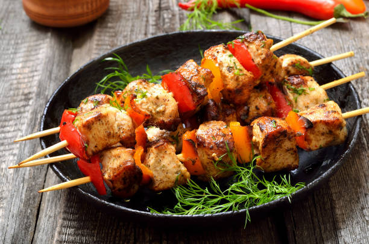

Kebab Recipe

Description
Use 1 finely chopped large onion in place of onion juice if desired.
Nutrition data for this recipe includes the full amount of marinade ingredients. The actual amount of marinade consumed will vary.
Ingredients
- 3 pounds boneless, skinless chicken breasts, cut into large cubes
- 1 cup plain yogurt
- 1 cup lemon juice
- 1 cup onion juice
- 1 cup olive oil
- ½ teaspoon chopped garlic
- ½ teaspoon ground black pepper
- ½ teaspoon saffron
- 8 skewers, or as needed
Steps
- CMix yogurt, lemon juice, onion juice, olive oil, garlic, black pepper, and saffron together in a large bowl. Add chicken pieces to the marinade and toss to coat. Cover with plastic wrap and marinate, 8 hours to overnight.
- Preheat an outdoor grill for medium-high heat and lightly oil the grate.
- Remove chicken from marinade; thread through skewers. Discard unused marinade.
- Cook on the preheated grill, turning frequently, until golden brown on all sides and meat is no longer pink in the center, about 8 minutes per side.